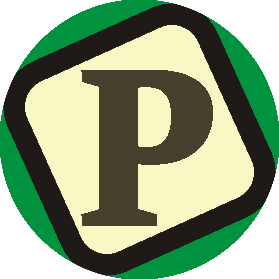

ProArHEP
Programa de Arqueología Histórica y Estudios Pluridisciplinarios
Somos el equipo de investigación del ProArHEP (Programa de Arqueología Histórica y Estudios Pluridisciplinarios), perteneciente al Departamento de Ciencias Sociales de la Universidad Nacional de Luján (UNLu), bajo la dirección del Dr. Mariano Ramos.
Desde el año 2000, llevamos adelante de manera ininterrumpida el proyecto de investigación arqueológica sobre la Batalla de la Vuelta de Obligado (1845) y la Guerra del Paraná, constituyendo la primera experiencia en la Argentina de Arqueología Histórica aplicada sistemáticamente a un campo de batalla de mediados del siglo XIX.
Abordamos el pasado desde una perspectiva pluridisciplinaria, integrando la Arqueología Histórica, la Arqueología del Conflicto y la Arqueología de la Violencia.
Creemos que el conocimiento profundo de los acontecimientos históricos requiere cruzar de forma crítica distintas líneas de evidencia:
Nuestro objetivo es aportar nuevas miradas científicas que complementen, revisen o amplíen las versiones tradicionales, contribuyendo a la puesta en valor y preservación del patrimonio histórico, arqueológico y ambiental de la Reserva Natural Vuelta de Obligado para toda la comunidad.